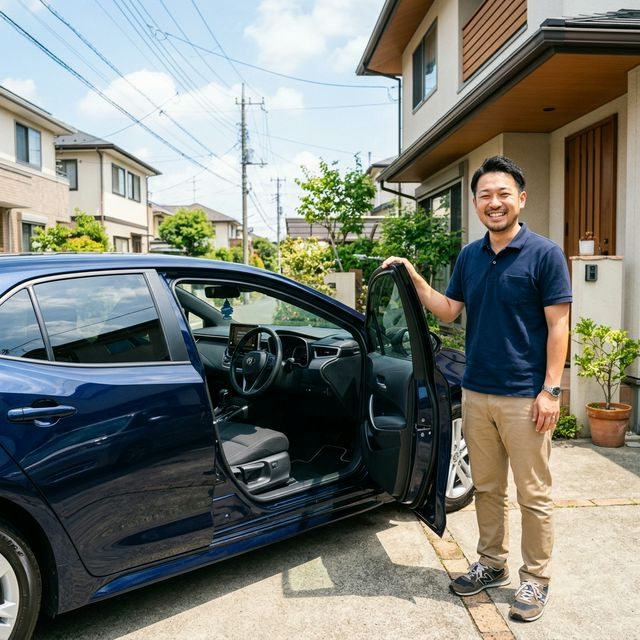

京都府全域・出張デッドニング＆スピーカー取付
ご自宅の駐車場で完結。専門店より圧倒的に安い！
※ 30分で完了・しつこい営業は一切しません
その悩み、特急便がすべて解決します！
デッドニングは、スピーカー交換と同時にやるのが「一番安くて一番効く」んです。
施工後は「え、こんなに変わるの？」と驚かれるお客様が京都府で続出中！
材料持ち込みへのこだわり
ネットの安売り材料、中古パーツもOK。あなたが選んだこだわりの品を大切に扱います。
プロの指先
マッチングサイトで高評価を量産中。配線のビビリ音対策まで、目に見えない場所も手を抜きません。
明朗会計
当日の追加料金なし。出張料も事前に提示します。
店舗を持たない出張専門だから、家賃も中間マージンもゼロ。
見積もり後の追加請求は一切なし。安心のお約束です。
京都市はもちろん、宇治・亀岡・長岡京など府内全域対応。
多くの実績を持つ技術者が丁寧に施工。「安い＝手抜き」は絶対にありません。
Amazon・楽天・ヤフオク・中古品。あなたの選んだパーツをプロが取付。
車種とパーツURLを送るだけ。最短30分でお見積もりをお返しします。
車種とスピーカーのURLをLINEで送るだけ！最短30分でお見積もりをお返しします。
お見積もりにご納得いただけたら、ご都合のいい日時を調整します。最短翌日OK！
ご指定の場所にお伺い。約2〜3時間作業。あなたは家でくつろいでいるだけでOK！
音の確認後にお支払い。見積もり通りの明朗会計で安心です。

「京都でこんなサービスがあるとは！Amazon購入のスピーカーをデッドニングとセットで取付してもらい、音質の変化に驚きました。出張なのに専門店より安くて大満足です！」
「宇治からでも出張してもらえて助かりました。見積もり通りの金額で追加請求なし。施工後のロードノイズが明らかに減って、ドライブが楽しくなりました！」
「DIYは難しそうで断念していましたが、特急便さんに任せて大正解。丁寧な施工でビビリ音もゼロに。次はリアドアもお願いしようと思います！」
施工前：ドア内部に制振材なし。走行中のビビリ音やロードノイズが気になる状態。
施工後：制振材・吸音材を丁寧に施工。ビビリ音ゼロ、音質が劇的に向上！
※ ホンダ・バモスのような軽バンは特にデッドニング効果が高く、施工後のロードノイズ低減と音質向上に驚かれるお客様が多い車種のひとつです。
「このスピーカーなんだけど、工賃いくら？」──そんなご質問だけでも大歓迎です。
※ しつこい営業は一切しません。お気軽にどうぞ！
| メニュー | 工賃（税込） |
|---|---|
| 🏆 フロントドア デッドニング＋スピーカー交換セット フロント左右2枚・材料持込OK | 25,000円〜 |
| スピーカー交換のみ（フロント左右） | 12,000円〜 |
| デッドニングのみ（フロントドア左右） | 15,000円〜 |
| リアドア デッドニング＋スピーカー交換セット | 20,000円〜 |
専門店の相場 70,000〜120,000円と比較してください
「え、こんなに変わるの？」と、施工直後に驚かれるお客様が続出しています。
上京区・中京区・下京区・東山区・左京区・右京区・西京区・伏見区・山科区・南区・北区
宇治市・城陽市・向日市・長岡京市・八幡市・京田辺市・木津川市
亀岡市・南丹市・京丹波町・綾部市
舞鶴市・宮津市・京丹後市・伊根町・与謝野町
スピーカーは安く買えた。あとは「信頼できるプロ」に任せるだけ。
お見積もりは完全無料。まずはLINEでお気軽にご相談ください。
京都府を中心に毎日駆け回っています！
※ 30分で完了・しつこい営業は一切しません